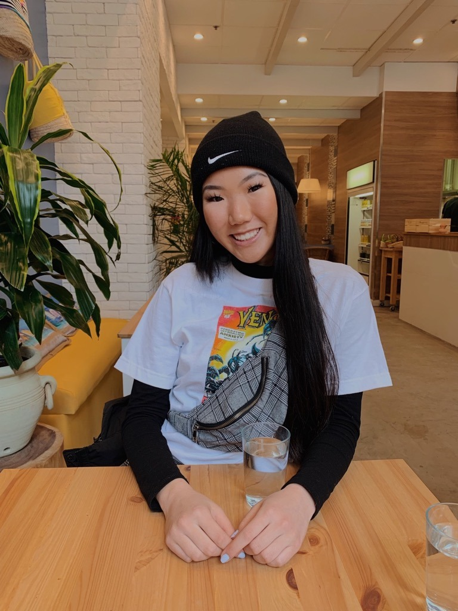

A little about me.

I'm Julia...
I’m an aspiring product designer driven by an oh-so-curious mind and an ever-empathetic heart.
an eager student...
I’m studying Systems Design Engineering at the University of Waterloo and stumbled across product
design on the way.
with big hopes as a designer...
We face numerous inconveniences everyday. However, as human beings, we acclimate and settle for
"the way things are" really fast. As a designer, I want to drive change . Rather than
settling for "the way things are", I want to create seamless experiences, ones where you didn't realize
were frustrating until they were addressed. It's easy to solve problems that everyone sees, but I want
to solve problems that no one sees.
and lots of passions.
When I’m not working, you can most likely find me shopping for my clothing
business, writing Medium articles, curating spotify playlists, or dancing my heart out in a studio.